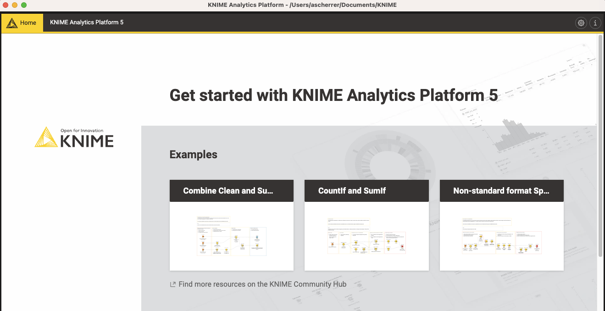
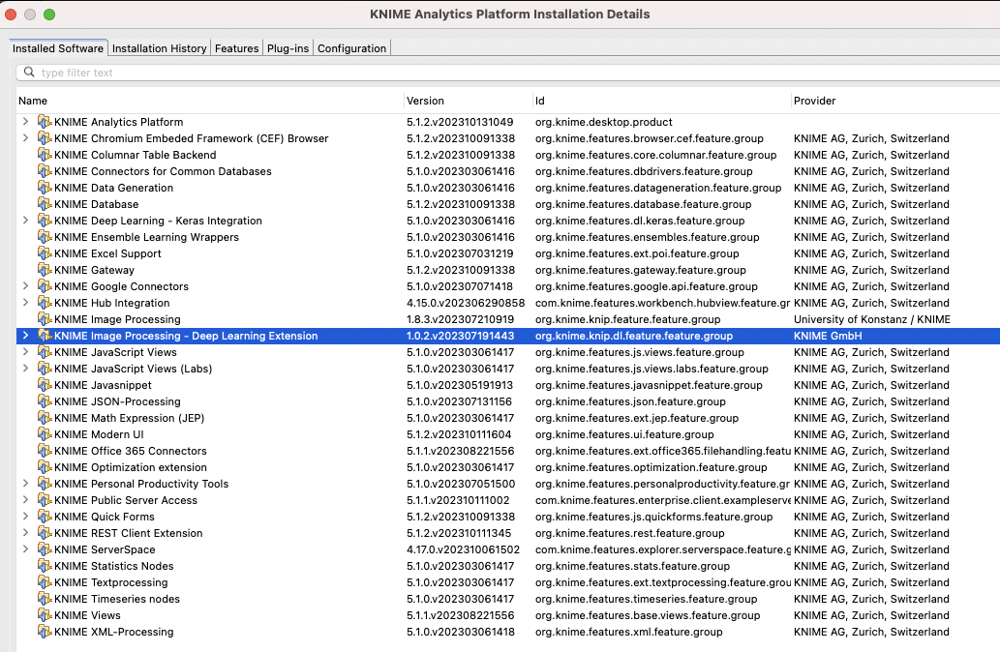

Setting up a working Knime for AI practice
Knime installation
- Go to https://www.knime.com/downloads
- Register
- Download knime for your platform -- Be careful to download the appropriate version for your computer!
- Be patient, it's a large file to download...
- Install knime
Knime setup
- Open knime, and select a folder where your workflows will be placed
- Then, you should see something like 
- Click on "i" button at the top right (highlighted in previous picture)
- Scroll down to find "Switch to classic user interface" button and click on it
- Go to File > Install KNIME Extensions
-
Install the following extensions:
- KNIME Optimization extension
- KNIME Textprocessing
- KNIME Deep learning - Keras integration
- KNIME Image processing
- KNIME Image processing - Deep Learning Extension
- KNIME Data generation
- KNIME Javascript Views (labs)
-
It will take a while...
- This is the list of extensions you should see if you click on "already installed" in the install extension menu. 
- Close KNIME
Python installation
The following steps are required only if anaconda is not installed on your computer.
-
Go to
anacondaand download anaconda for your computer -
Install anaconda
Setup KNIME with Python
- Open KNIME
- Go to File > Preferences
- Navigate to KNIME > Python (legacy)

- Select Python 3 at the top
- Select
condaas python environment configuration - Don't worry about python2 (we will not use it)
- For Python 3, click on "Create new environment"
- This will take a while...
- When completed reset KNIME
Python environment for Keras
For Keras, a specific environment is required.
- Open KNIME
- Go to File > Preferences
- Navigate to KNIME > Python Deep Learning

- Select "Use special Deep learning configuration as defined below"
- Select
Kerasas the library for DL Python - Select
condaas python environment configuration - Don't worry about tensorflow 2 (we will not need it)
- For Keras, click on "Create new environment"
- For Windows/Intel MACs/Linux it should work. For Appel Silicon MAC, see below:
Follow the steps below for Apple silicon (M1/M2) Mac
Apple silicon (M1/M2) mac users
For Apple Silicon macs, you will need to create manually an environment because the required libraries at old and they havn't been compiled for M1/M2
- Download Rosetta2 following this procedure
- On your Mac, go to Application > Utilities and open the
Terminalapp - On the terminal here are the commands you need to execute:
- Open KNIME
- Go to File > Preferences
- Navigate to KNIME > Python Deep Learning
- For Keras, choose py3_knime_keras as environment.
Package list on my installation for Keras
Package Version
------------------- ---------
absl-py 0.15.0
astor 0.8.1
certifi 2021.5.30
coverage 5.5
Cython 0.29.24
dataclasses 0.8
gast 0.5.3
grpcio 1.36.1
h5py 2.8.0
importlib-metadata 4.8.1
Keras 2.2.4
Keras-Applications 1.0.8
Keras-Preprocessing 1.1.2
Markdown 3.3.4
numpy 1.19.2
pandas 0.23.0
pip 21.2.2
protobuf 3.17.2
python-dateutil 2.8.2
pytz 2021.3
PyYAML 5.4.1
scipy 1.5.2
setuptools 58.0.4
six 1.16.0
tensorboard 1.12.2
tensorflow 1.12.0
termcolor 1.1.0
typing_extensions 4.1.1
Werkzeug 2.0.3
wheel 0.37.1
zipp 3.6.0